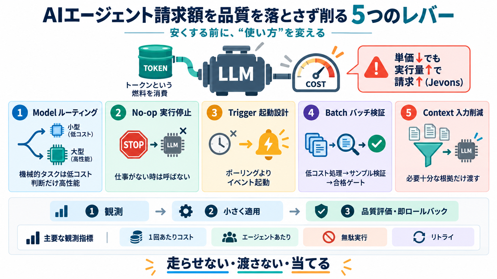

Jevons Paradox: Why Every AI Optimization Makes the Hardware ...
Confidence: Anthropic made 1M token context generally available for Claude Opus 4.6 and Sonnet 4.6 at standard pricing …

単価が下がっても請求が増えるのは、運用量と実行設計が連動して膨らむからです。品質を落とさずに下げるための「5つのレバー」を整理します。
トークン単価が下がっても、実行回数・エージェント数・試行回数・自動化範囲が増えるため総支出が増えます。これが Jevonsのパラドックス（Jevの逆説）です。
LLMは「計算するたびに燃料（トークン課金）を使うエンジン」です。だから見るべきは“エンジン本体の値段”だけでなく、回し方と積載（コンテキスト）です。
コストは「モデル選択」だけでなく「無駄実行」「起動方式」「バッチ運用」「コンテキスト量」の合成で決まります。次の5つを組み合わせて効かせます。
すべてを最上位モデルに固定せず、抽出・分類・整形は下位モデルへ移します。判断・推論が必要な部分だけ高価モデルを使います。
高価な処理に入る前に「今回処理すべき仕事があるか」を確認し、なければ終了します。これが no-op exit です。
ポーリングは「新しい仕事ありますか？」を繰り返すたびにコストが発生します。トリガーは出来事が起きた時だけ起動し、待機中の無駄を削れます。
大量の分類・清掃などは、低コストモデル＋検証（サンプリング）前提で運用します。すべてを毎回“高価に正確化”しないのがポイントです。
不要な情報を渡さず、必要十分な文脈だけを高価モデルに渡します。削りすぎは失敗の原因になるため“目的に合う削り方”が必要です。
「安いモデルに全部置換」では、判断・推論が必要な箇所で品質低下が起きます。品質比較とロールバックを前提に、タスク別に置き換えます。
効率化すると使用量が増えて再び膨らむことがあります。月次で「1回あたりコスト」「エージェントあたりコスト」「週次の増減」「無駄実行」「リトライ積み上げ」を見ます。
コスト削減は「単価」ではなく「実行の無駄」「起動方式」「入力（コンテキスト）」「タスク別モデル」の最適化です。Jevonsの反作用を前提に、監視し続けます。
Confidence: Anthropic made 1M token context generally available for Claude Opus 4.6 and Sonnet 4.6 at standard pricing …
| | | | | | --- --- | Workload | Tokens In / Out | LLM Cost | System One Cost | Reduction | | Extraction to a fi…
The bills went the other way. In May 2025, Google processed 480 trillion tokens a month across its products — fifty time…
Ramp data shows that as of June 2026, approximately 55% of U.S. enterprises have paid subscriptions to AI models or tool…
DeepSeek made a permanent 75% price cut on V4 Pro on May 22. Cursor Composer 2.5 offers $0.50 per million input tokens. …